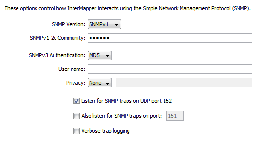

SNMP Preferences
Use the SNMP subsection of the Server Preferences section to set the default
SNMP settings for each SNMP access method. These settings are used for
all new devices.
About SNMP Versions
InterMapper can retrieve data from devices using SNMP version 1, version
2c, or version 3. Each of these can access the same SNMP information, but
through different means:
- SNMPv1 was the original version, and provided
a simple means for retrieving data. Security was provided through community
strings that acted like a password to allow or deny access to the
information. The Read-Only community string gave permission to the requester
to read data; the Read-Write community string gave permission to modify
data. All data transmissions (including the community string) were sent
"in the clear", that is, unencrypted.
- SNMPv2c provided
additional, more efficient methods to request data, and added new data
types (such as 64-bit counters) so that the monitoring system could get
more accurate data. SNMPv2c is like SNMPv1 in that it uses the same community
string system, and transmits data in the clear.
- SNMPv3 provides the same data retrieval facilities
as SNMPv2c, with additional security. There is a secure method of providing
authentication information (so the device knows whether to respond to
the query or not), as well as a privacy function that encrypts the entire
transmission so that eavesdroppers cannot discern the data.
What is an SNMP Community String?
The SNMP Read-only Community string is like a user id or password that allows
access to a router's or other device's statistics. InterMapper sends the community
string along with all SNMP requests. If the community string is correct, the
device responds with the requested information. If the community string is
incorrect, the device simply ignores the request and does not respond.
Note: SNMP Community strings are used only
by devices which support SNMPv1 and SNMPv2c protocol. SNMPv3 uses username/password
authentication, along with an encryption key.
Community String Types
There are actually three community strings for SNMPv1-v2c-speaking devices:
- SNMP Read-only community string
- enables a remote device to retrieve "read-only" information
from a device. InterMapper uses this information from devices on its maps.
- SNMP Read-Write community
string - used in requests for information from a device and to modify
settings on that device. InterMapper does not use the read-write community
string, since it never attempts to modify any settings on its devices.
- SNMP Trap community string
- included when a device sends SNMP Traps to InterMapper. InterMapper
accepts any SNMP Trap community string.
By convention, most SNMPv1-v2c equipment ships from the factory with
a read-only community string set to "public". It is standard
practice for network managers to change all the community strings so that
outsiders cannot see information about the internal network. (In addition,
network managers may employ firewalls to block any SNMP traffic to ports
161 and 162 on the internal network.)
SNMP Server Settings Pane
InterMapper remembers the default settings for each of the various SNMP
access methods. These are set in the Server Settings>SNMP preference
pane. 
This pane allows you to specify the following:
Setting the default SNMP preferences
- SNMP Version -
Select the default SNMP version to be used for new devices in autodiscovery.
InterMapper will attempt to use the selected version when it discovers
a new device. If it gets a response, it will continue to use that version.
If that fails, then it will simply ping the device.
- SNMPv1-2c Community
- If the selected SNMP Version is either SNMPv1 or SNMPv2c, InterMapper
will use this community string to attempt to communicate with the device.
- SNMPv3 Authentication
- If the selected SNMP version is SNMPv3, InterMapper will use the specified
authentication method (SHA, MD5, or None) with the indicated password
on the right to authenticate with the device.
- User Name - The
SNMPv3 user name to be used for authentication and privacy.
- Privacy - When using SNMPv3,
the privacy method (DES, AES, or None) will be used with the encryption
password on the right.
- Listen for SNMP Traps
on UDP Port 162 - Check this box if you want InterMapper to listen for
SNMP traps sent from devices to the standard port 162.
- Also listen for SNMP
traps on UDP port - InterMapper can listen for traps on a second,
non-standard port (in addition to port 162). Check this box and enter
the port number in the text box. Traps received on this alternate port
are handled in the same manner as those received on port 162.
- Verbose trap logging
- Check this box to instruct InterMapper to display the full OID and contents
for all varbinds of a trap, instead of simply the varbind contents.
Setting SNMP Preferences for Specific Devices
The panel shown above sets the default SNMP preferences that InterMapper
uses when querying devices. You can also set SNMP preferences for individual
devices on your map using the Set Community... (SNMPv1-v2c) or Set Probe... (all
three SNMP versions) commands, available from the Monitor menu. You can set various parameters for one or more devices at a
time, by selecting the devices you want to change before executing the command.